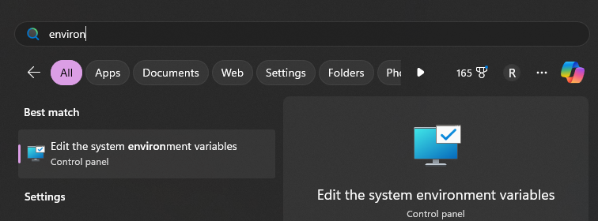
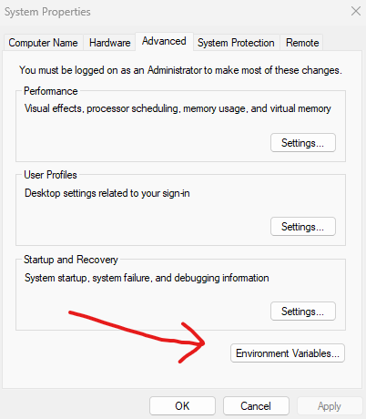
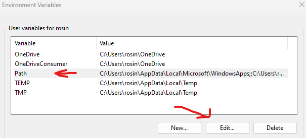
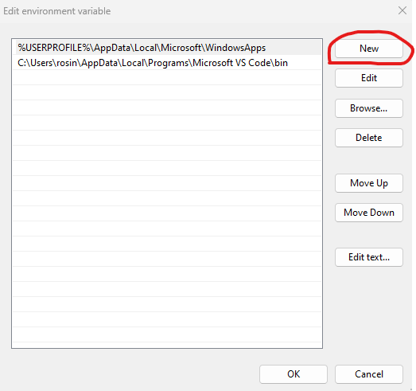
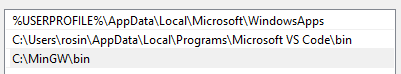

Mike's C Programming Tutorial
Writing code is hard, but learning to code doesn't have to be
Hey everyone, thanks for checking out my tutorial.
My name is Mike Rosinsky. I'm a software engineer, and a recent CS grad.
 |
|---|
| My sick heel click at graduation |
Having just gone through my undergrad only a few years ago, I wanted to throw together some tutorials for others that may be in the same boat I was a few years ago.
My peers would always talk my ear off about how their professor doesn't explain concepts well enough for them to understand. And going through a number of CS and non-CS courses in school, I certainly see where they're coming from.
I have no doubt that professors have an immense amount of knowledge about their respective fields, which is why they became professors.
But teaching is hard, and more importantly, having a good medium for teaching is even harder.
I hope to teach people not only to code, but to enjoy coding, using techniques that myself as a student could understand.
I want to teach not from the perspective of a professor, but from the perspective of a peer - As a fellow software engineer who is still learning myself, and has gone through what current students are currently going through.
I view education as a gift one can give to another.
Therefore, I write these tutorials out of a pure passion project, and because I truly love the field that I'm in and want to share my passion with others.
I'll never put these tutorials behind a paywall, or charge for asking me advice.
Please don't hesitate to reach out to me with questions regarding:
- Something in these tutorials that didn't quite make sense
- Homework help
- Typos in the tutorials
- or anything else
at my email: rosinskymike@gmail.com
I'd love to help in any way I can.
Why (the heck) Am I Learning C?
"Excuse me professor, it's not 1975 anymore. Why do I have to take a C programming class in order to graduate?"
- You (probably)
I asked this same question to myself when I had to take CS 3100 - Systems Programming, which was exclusively taught in C.
I also asked similar questions such as:
- Do companies even use C anymore?
- If C is so complicated, why can't I just use Python or JS?
If you find yourself asking these questions as well, I may just have some answers for you that will hopefully allow you to see why just going through the motions of a C programming class may be doing yourself a disservice.
The Short Answer
So why do I have to learn this language in order to get my CS degree?
I'll put the answer that I found as a CS student simply:
C allows us to understand the how when it comes to programming, instead of just the what
Chances are, this isn't your first programming class in undergrad, and if it is, I may even consider that a better place to start than how most universities approach teaching programming.
Likely, our undergrad started with a higher-level language like Python or Javascript, because they tend to be lighter introductions to programming concepts.
Learning languages like these are useful, but they tend to answer a lot of what questions, such as:
- What are
forloops? - What are variables?
- What is inheritence?
When a student learns a language that is a bit lower-level, such as C, we force ourselves to learn how things work, not just what things work.
When we learn to drive a car, sure we can press the pedals and turn the wheel, but if we don't understand what's going on under the hood, our chances of fixing things, or making the next best car, are slim to none.
We, as engineers in general, but more specifically as software engineers, are called to understand how things work! That includes under the hood, and learning C forces us to do that.
But C is Old!
Yep, C really is the boomer generation of programming languages.
The problem is, modern languages like Python, or even C++ abstract some core concepts away from us as programmers that C forces us to tackle.
The point isn't that C is that only option to write production-level code, of course it isn't, but as students we should embrace the opportunity to lift the abstractions so we can actually grasp the concepts.
Then, once we understand these things, moving to the more modern languages is a breeze, and gives us natural intuition into what might be going on when our programs break.
Do Companies Actually Use C Anymore?
Short answer? Yes! But maybe not like they used to.
C still has its uses in production-level code today, but it fills a bit of a different role than what it used it.
Back before the conveniences of the higher-level modern languages that are common today, C was used for pretty much everything. Want a new text editor program? Write it in C. A file versioning software like git? Write it in C!
These days, projects like those would probably be tackled by more modern languages for a few reasons, such as:
- Most modern languages handle memory operations for you, so its harder to have memory-related issues such as memory leaks
- Modern languages have larger built-in functionality sets, such as C++ having robust support for strings, where C does not.
- Most modern languages are not platform dependent, meaning whether we're programming a tool for Windows, Linux, Mac, etc, the code will look the same
- etc.
C still has it's uses, however, but increasingly less as a general purpose programming language like it used to.
C sees use in things like embedded development, where memory space is at an absolute premium, and languages with larger built-in libraries would be too large.
C also offers more direct acces to hardware, in that we can write to specific addresses that an embedded device may need us to write to.
C also sees widespread use in low-level programming tasks where speed is crucial, such as operating system development, router software, firmware, and more.
Summary
Hopefully this section has given you as a programmer a bit more motivation to learn C.
Now let's get in to the actual tutorials.
Chapter 2 - Getting Started
This chapter will aim to get you started writing programs in C!
We'll discuss:
- Compiler installation
- IDEs
- Writing your first program
2.1 - Installation
Compilers
The first step in any journey to using C is to actually install it.
C is a compiled language, thus, we need to install a compiler for C.
📕 Vocab
Compiler: A specialized program to translate code from one form to another.
Obviously, our computer can't actually read the programs we type out in C. Our CPU can only understand its instruction set, which takes the form of 1's and 0's.
Since it would surely be a pain to type an entire file of binary digits and load it into the processor, we use a compiler to translate human readable source code into what's called machine code.
📕 Vocab
Machine Code: A program that a CPU can directly execute
A compiler does not necessarily have to translate its programs to machine code. Oftentimes, compilers will translate programs to an intermediate language, that can be understood by other programs.
A C compiler, however, does translate source code directly into machine code.
So let's look at how we can install one!
Which Compiler Should I Install?
There are many options for C compilers that exist today. The most popular ones include:
gcc- The GNU Compiler CollectionclangBorland Turbo C- and many more...
Chances are, if you are taking a university class, the professor probably has instructions on their course page for installating a specific compiler that they will be using throughout the class. If so, I would follow that instead of my instructions.
Linux Installation
Installing a C compiler on Linux is probably the easiest of all the platforms due to Linux's package managers.
For systems such as ubuntu, we'll install gcc through the apt package manager:
Copy this line into a terminal window.
$ sudo apt-get update && sudo apt-get install gcc
After allowing it to install, we can verify its installation by writing:
$ which gcc
/usr/bin/gcc
The line doesn't have to match the output that I show, but as long as something populates, we know it's installed! If nothing came up after running that command, you should re-check the installation.
We can also check the version by running:
$ gcc --version
gcc (Ubuntu 11.4.0-1ubuntu1~22.04) 11.4.0
MacOS Installation
We'll use the macOS package manager, homebrew, to install our C compiler.
To check if you have homebrew installed, open a terminal session and run:
$ which brew
If nothing comes up, then follow the instructions from brew's homepage to install it.
Once that's installed, let's use it to download gcc:
$ brew install gcc
Now we should be able to check the version:
$ gcc --version
Windows Installation
We'll install gcc for windows using the runtime environment called MinGW-w64.
- Download
MinGWfrom this page. - Run the installer and select the components. At minimum, you'll need the
gcccompiler. - Add
MinGWto PATH. This allows us to rungccfrom any location in command prompt.
Search for environment in the search bar and click Edit the system environment variables
|  |
|---|
Click Environment Variables
|  |
|---|
Highlight the Path entry, and click Edit
|  |
|---|
Select New
|  |
|---|
Enter the installation location for your MingGW\bin directory. For example:
|  |
|---|
Press OK until all menus close.
To verify we've successfully installed gcc, open command prompt or powershell and type:
> gcc --version
Online Compilers
There are also a number of websites that allow you to write and execute code directly in a browser window.
This alleviates the need to install packages on your computer.
Some common sites include:
- OnlineGDB
- Programiz
- tutorialspoint
- and many more
If you'd like to use the options throughout the process, that's totally fine!
Personally, I think it's good practice to actually get used to working with the compiler and command-line tools, since it's essential in any software engineering job.
But for a quick-and-dirty environment to just try out some code snippets without the overhead of the command-line, it's a great solution!